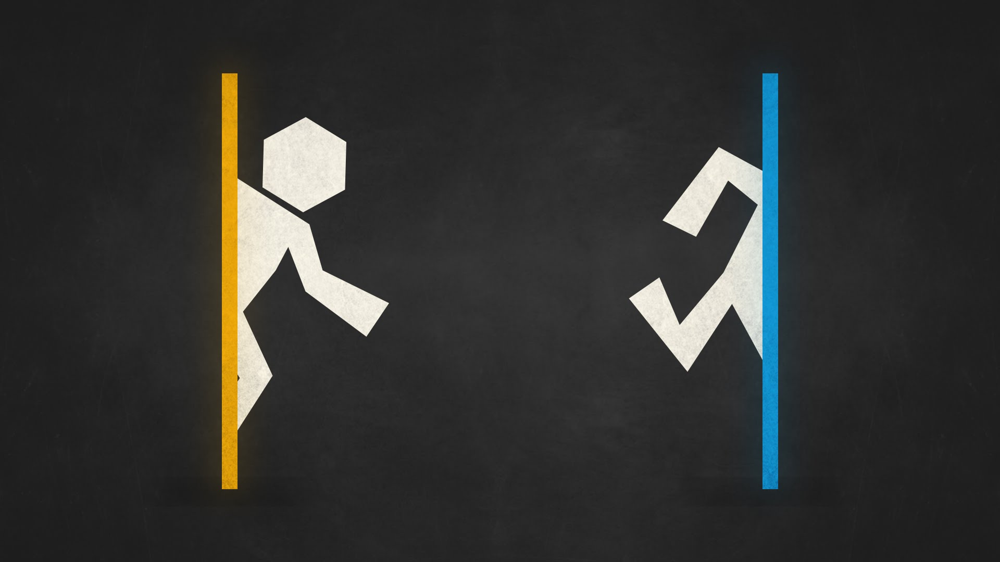

포탈 1

주황색 문으로 들어가면 파랑색 문에서 나온다. 물론 반대로도.
앞의 설정이 게임의 전부이다. 간단하면서도 신박한 이 설정 하나가 매우 큰 재미를 선사한다.
우리는 실험대상으로서 차분하게 실험을 하나씩 성공해 나가는 것이 목표이다.
다시, 나가는 것이 목표이다.
한 단계 한 단계 전진해내는 쾌감을 위해서는 머리를 쓰는 것도 중요하지만 동시에 은근하게 컨트롤 실력을 요구한다.
그렇게 진행하다 보면 거슬리는 게임 내내 들려오는 나를 비꼬는 목소리는 정말이지 때려주고 싶게 만든다.
그리고 실제로 그렇게 했다.
엔딩은 후속작을 암시하는 듯 찝찝하게 끝났지만 모두가 알고있듯이 포탈2가 남아 있다.
서둘러 포탈 시리즈의 결말을 보러 가자.
-게임 클리어 18.04.08